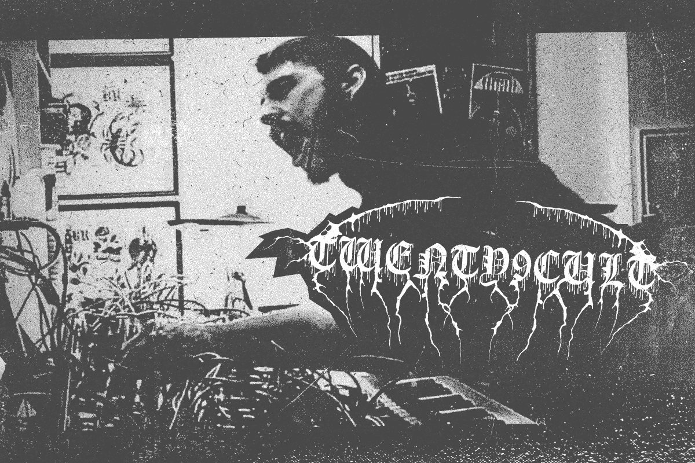
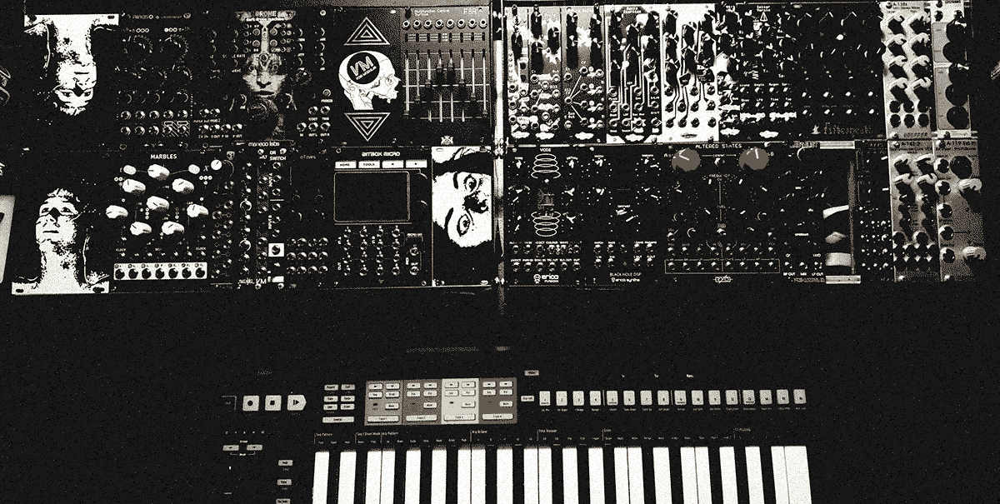

Interview: Twenty9Cult
29/06/2022

Who is Twenty9Cult & what’s the story so far?
First of all, let me thank you and all of the Black Panels Only community for letting me share my journey with you. My name is Alexandre Gaudreault aka Twenty9Cult. I live in a small town in Québec, Canada. There wasn't much to do apart from playing music and watching movies so there's my background right there. I played guitar and bass in countless local Death Metal/Hardcore acts. "29" really comes from there, starting with family and very close friendships and all of the weirdness that comes with it. We all have our lucky number and I guess this one is mine (like 23 was to Jim Carrey).
I always had a strong interest in noise and electronic music. My guitar rig quickly evolved into one gigantic uncontrollable pedalboard. One night I saw John Carpenter playing live and the very next day I bought my first synthesizer. Slowly, all of the big amplifiers and my rigs lost their place to accommodate more synths, drum machines and noise boxes. I really enjoyed them but something was missing and I wasn't feeling inspired by the rig I'd built. I wasn't getting the tone and creative freedom that I was looking for and I found exactly that within the modular synthesizer world. When Covid-19 started I decided to make the move. I sold everything to build the system that I have today. I will never look back.
The Scent music video is awesome, it’s so cool to see a proper video and also to hear a modular-based track with vocals. It’s super heavy, reminds me of Author & Punisher. How did the collaboration come about?
MR.8 and I have been in contact for quite some time now and we always appreciated each other's work. I always send him tracks that I make and he's become my constructive criticism reference pretty much. One day I sent this instrumental improvised patch and shortly after he sent me back the files with his vocal on it and I was mindblown by the results. Leo went through his concept by filming the footage before handing the editing task to Powders Playground and she delivered one hell of a videoclip for the song. These 2 artists are amazing and I'm very grateful for their collaboration on this track. "The Scent" is spontaneous, heavy and raw. Everything was made using only 4 modules; BIA, Desmodus Versio, Rings and Grone.
Leo and I are already working on more similar materials.
What’s your set-up like at the moment- do you use any extra gear outside of the rack?
My re-born set up is currently made of two 6U 84HP hand-made cases. The first one is more about modulations, utilities and what I call the "Endless" section; I use the Grone combined with Rings a lot for background noise, drone and transition between patterns. The other case is where all the craziness happens. I recently changed sequencer, from the Stillson Hammer to a Keystep Pro, at first to gain more flexibility but now I feel that this move has completely changed the way I can play modular inside and outside of the studio. I use the Presonus StudioLive 16.0.2 mixer when I record my videos. I never use anything else aside from what's in front of me physically, although lately I've been developing my Ableton mixing and songwriting skills.

Are there any particular modules or companies in your set-up that are key to your sound?
I'd say Noise Engineering without hesitation. I love how all of their modules are user-friendly. Manis Iteritas, BIA, the Ruina and Versio families are a very big part of my tone. Their Virt Iter Legio is the next thing coming into my case. When it comes to favourite modules, I would say it's the Maneco Labs Grone. Who can sleep on the MS-20 filters and Clouds in the same package? I use it more as a stand alone to fill up and create atmosphere. Every time I patch this thing I find new possibilities.
I saw you did your first modular live show in November- how did that go?
This was the very first post-Covid event in Montréal I'd attended and the atmosphere was incredible. It was more like an open jam where everyone took a table, set up their gear and shared the sound system all night. I definitely gained confidence and answered the question of if it was possible to play live with modular. I went there using a minimalistic approach but next time I'll let the beast come out.
What’s next for Twenty9Cult?
The creative mindset is currently at it's best so I think it's time to sit down and truly put the machine to work. An EP is on the horizon. I'm also exploring the option of another live performance, including online streaming. And lastly, I have another project coming up for fans of extreme found footage.